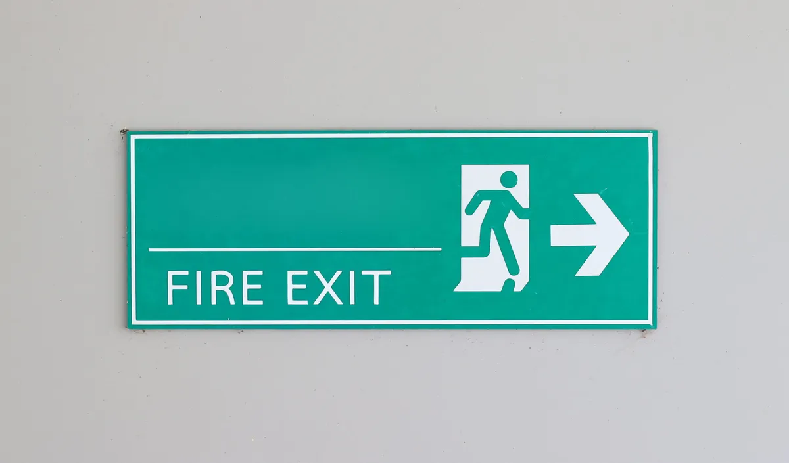

An effective fire safety solution will never consist of just one device; rather, it will be a cohesive system that integrates all parts into a synchronized communication and response process. This article explains everything that is important – and why LockShield Cart is the name in fire safety devices throughout the UAE.
Why Does Choosing the Right Fire Alarm Smoke Detector Supplier in UAE Matter?
Smoke detectors are usually the first to respond when there is a fire outbreak. When there is no fire yet but only the early signals indicating that there will soon be one, a working smoke detector detects the fire signals and alarms everyone about it.
However, here is something that building owners do not realize — the efficiency of the fire detector depends on the supplier who provides such equipment. By selecting a certified and experienced Fire Alarm Smoke Detector Supplier in UAE, you will be able to acquire efficient and reliable products.
Types of Smoke Detectors Available:
- Ionization Smoke Detectors — Best for detecting fast-flaming fires with minimal visible smoke
- Photoelectric Smoke Detectors — Ideal for slow-burning, smouldering fires that produce thick smoke
- Dual-Sensor Detectors — Combine both technologies for broader fire detection coverage
- Heat Detectors — Suited for kitchens and dusty environments where smoke detectors may trigger false alarms
- Beam Detectors — Cover large open spaces like warehouses and atriums using an infrared beam across the area
- Multi-Sensor Detectors — Detect smoke, heat, and CO simultaneously for maximum early-warning accuracy
What to Look for in a Fire Alarm Smoke Detector Supplier in UAE:
- UAE Civil Defence approved and EN 54-certified products
- Wide range covering addressable and conventional detector systems
- Technical support for system design and zoning
- Compatibility with major fire alarm control panels
- After-sales servicing and calibration support
- Proven track record with commercial and industrial projects
LockShield Cart is a renowned supplier of fire alarm smoke detectors in UAE, providing you with a complete range of detectors that can be installed in residential towers, offices, hospitals, educational institutions, and industries.
How Do Fire Alarm Cables Suppliers Impact the Reliability of Your Fire System?
The people make huge investments in fire alarms detectors and control panels; however, they usually do not give enough importance to fire alarm cabling systems. They form the nervous system of the whole fire alarm system and transfer signals coming from detectors, call points, and sounders to the control panel. In case of failure in any cables during fire, the whole fire alarm system will become useless.
This explains the significance of having quality certified Fire Alarm Cables Suppliers.
Key Properties of Fire Alarm Cables:
- Circuit Integrity (CI) — Fire-rated cables maintain circuit function even when exposed to flames, ensuring alarms keep sounding during a fire
- LSZH (Low Smoke Zero Halogen) — Produces minimal toxic smoke when burning, critical in enclosed spaces
- Shielded vs. Unshielded — Shielded cables protect against electromagnetic interference in industrial environments
- Twisted pair construction — Reduces signal loss across long cable runs in large buildings
- Temperature rating — Quality cables withstand temperatures up to 180°C or higher without signal failure
- Colour coding compliance — Red-jacketed cables are standard for fire alarm systems as per BS 5839 guidelines
Comparison — Standard Cable vs. Fire Rated Cable:
- Standard Cable — Fails within minutes under direct flame exposure, signal lost, alarm silenced
- Fire Rated Cable (CI rated) — Maintains circuit integrity for 30 to 120 minutes under fire conditions, alarm continues operating
We at LockShield Cart, the Reliable Fire Alarm Cable Suppliers in UAE, offer a comprehensive assortment of fire rated, LSZH, and circuit integrity cables that come from internationally accredited manufacturing firms and can be used for any type of construction.
Why Is an Emergency Light Supplier Essential for Your Building’s Safety Plan?
Whenever there is an outbreak of fire, power outages are virtually guaranteed to happen. Inadequate lighting in hallways, staircases, and exit ways leads to chaos during the evacuation process. This is when the services of an efficient Emergency Light Supplier become crucial.
Types of Emergency Lighting:
- Maintained Emergency Lights — Stay on continuously and switch to battery backup when mains power fails
- Non-Maintained Emergency Lights — Only activate during a power failure or emergency
- Exit Sign Lights — Illuminated directional signs guiding occupants to the nearest exit
- Sustained Emergency Lights — Powered by a central battery system rather than individual unit batteries
- High-Bay Emergency Lights — Designed for warehouses and large industrial spaces with high ceilings
What Quality Emergency Lights Must Deliver:
- Minimum 3-hour battery backup as required by UAE Civil Defence and BS 5266 standards
- Auto self-testing function to reduce manual inspection workload
- LED technology for energy efficiency and longer lamp life
- IP-rated enclosures for use in wet, dusty, or outdoor environments
- Clear lux output meeting minimum floor-level illumination requirements
LockShield Cart partners with certified manufacturers as a dependable Emergency Light Supplier in the UAE — ensuring your evacuation routes remain clearly lit when it matters most.
When Should You Use a CO2 Fire Extinguisher and Where to Find a Trusted Supplier in the UAE?
It is not true that any kind of fire can be handled by water or foam. There are places like server rooms, electrical panels, laboratories, offices, etc., where choosing an inappropriate extinguisher might result in even more loss than a fire could do. This is when CO2 Fire Extinguishers prove to be the best choice to extinguish such types of fire.
Why CO2 Fire Extinguishers Are Preferred in Specific Environments:
- Zero residue — CO2 evaporates completely, leaving no mess or damage to sensitive equipment
- Non-conductive — Safe to use directly on live electrical equipment without risk of electrocution
- Fast acting — Displaces oxygen rapidly, smothering the fire at its source
- No water damage — Critical in server rooms, archives, and electronics storage areas
- Compact and portable — Available in 2kg, 5kg, and larger capacities for different space requirements
Where CO2 Extinguishers Are Most Needed:
- Data centres and server rooms
- Electrical switchrooms and substations
- Laboratories and research facilities
- Office spaces with high electrical load
- Manufacturing plants with electrical machinery
As a certified CO2 Fire Extinguisher Supplier in UAE, LockShield Cart provides fully charged, inspection-ready CO2 extinguishers with all required certification documentation — along with installation brackets, signage, and annual servicing support.
What Makes LockShield Cart the Most Reliable Fire Safety Partner in the UAE?
Given the number of products and suppliers available, what really sets LockShield Cart apart from other companies is the certification, support, and all-inclusive fire safety solutions that it offers.
LockShield Cart Specialities:
- Complete fire safety range — Smoke detectors, alarm cables, emergency lights, CO2 extinguishers, and much more
- Certified products only — Every product carries UAE Civil Defence approval and international certifications
- Expert consultation — Free guidance on system design, product selection, and compliance requirements
- UAE-wide delivery — Fast, reliable dispatch across all seven emirates
- Installation and commissioning — Trained technicians handle end-to-end project execution
- Annual maintenance contracts — Keep your fire systems tested, compliant, and always operational
- Responsive customer support — Quick response to queries, technical questions, and after-sales needs
Frequently Asked Questions
Q1. How often should smoke detectors be tested and replaced?
Smoke detectors should be tested monthly and professionally serviced annually. Most detectors have a recommended replacement cycle of 8 to 10 years. As a certified Fire Alarm Smoke Detector Supplier in UAE, LockShield Cart provides both supply and maintenance services to keep your detection system in peak condition.
Q2. What cable standard is required for fire alarm systems in the UAE?
UAE fire alarm installations typically require circuit integrity rated cables complying with BS 5839 and EN 50200 standards. LockShield Cart, as one of the leading Fire Alarm Cables Suppliers in the region, stocks fully compliant cables for all system types.
Q3. How long should emergency lights stay on during a power failure?
UAE Civil Defence and BS 5266 require a minimum of 3 hours of emergency lighting duration. LockShield Cart as a trusted Emergency Light Supplier provides units with 3-hour and extended backup options for all building categories.
Q4. Can CO2 extinguishers be used in kitchens?
No. CO2 extinguishers are not suitable for Class F cooking oil fires. For commercial kitchens, wet chemical extinguishers and kitchen suppression systems are required. Contact LockShield Cart as your CO2 Fire Extinguisher Supplier in UAE for guidance on the right extinguisher for each area of your building.
Q5. Does LockShield Cart supply fire alarm systems for large commercial projects?
Yes. LockShield Cart handles projects of all scales — from small retail units to large commercial towers and industrial complexes — providing complete fire alarm systems including detectors, cables, control panels, and emergency lighting.
Q6. Are addressable and conventional smoke detectors both available?
Absolutely. LockShield Cart supplies both addressable and conventional smoke detectors to suit different system requirements, building sizes, and budget considerations.
Final Thoughts
Fire safety constitutes a full ecosystem, and by neglecting any of its aspects, you compromise everything. Are you looking for a reliable Fire Alarm Smoke Detector Supplier in the UAE? Or, perhaps, for certified Fire Alarm Cables Suppliers? What about an Emergency Light Supplier and CO2 Fire Extinguisher Supplier in UAE? Look no further – LockShield Cart has all that and more!
Don’t wait for an emergency to find out your fire systems were not up to standard. Reach out to LockShield Cart today and build a fire safety setup you can truly rely on.